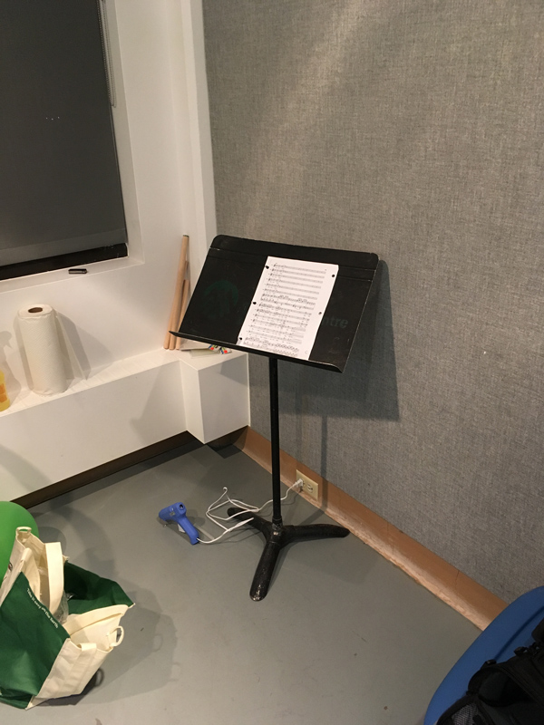

Banff Centre — Still Alive Residency
July 11 – August 19, 2016
Presented by: Russell Gordon
This page is intentionally left blank.

Counterfeit Debit Card (Johnny Cash), 2006


Counterfeit Debit Card Receipt, 2008

Cutups (Devo), 2011

Cutups (Ziggy), 2011

Little Pieces (Installation View), 2008
Looking down through the upstairs floor

Little Pieces (Installation View), 2008
Basement


Licence to melt pennies
from Minister of Finance, Jim Flaherty, 2013

Pouring at Night, 2013


Lalakenis (Installation View), 2016
Photo: Michael R. Barrick, Courtesy Morris and Helen Belkin Gallery

Thanks!